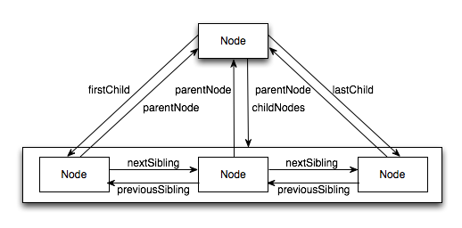

DOM（文档对象模型）是针对HTML和XML文档的API。DOM描绘了一个层次化的节点树，允许开发人员添加、移动或修改页面的某一部分。DOM脱胎于DHTML，现在已经发展为表现和操作页面标记的跨平台、语言中立的方式。1998年10月DOM 1级规范成为W3C的推荐标准，为基本的文档结构及查询提供了接口。IE、Firefox、Safari、Chrome和Opera都非常完善的实现了DOM。
IE中的所有DOM对象都是以COM对象的形式实现的，所以IE中的DOM对象与原生JavaScript对象的行为或活动特点存在差异。
DOM可以将任何HTML或XML文档描绘成一个由多层节点构成的结构。节点分为几种不同的类型，每种类型分别表示文档中不同的信息或标记。每个节点都拥有各自的特点、数据和方法。节点之间存在某种关系，这种关系构成了层次，而所有页面标记则表现为一个以特定节点为根节点的树形结构。
<html>
<head>
<title>Sample Page</title>
</head>
<body>
<p>Hello World!</p>
</body>
</html>
文档节点（Document）是每个文档的根节点，文档节点只有一个子节点，即<html>元素，我们称之为文档元素。文档元素是文档的最外层元素，文档中的其他元素均包含在其中。
每一段标记都用一个节点来表示：元素通过元素节点表示
DOM1级定义了一个Node接口，所有节点类型均需实现该接口。JavaScript中将Node接口实现为Node类型，所有节点类型均继承自Node类型。
nodeType属性表示节点类型。Node类型定义了下列12个常量，并不是所有的节点都受到Web浏览器的支持：
在IE8（包括）之前没有公开Node类型的构造函数，为了保证跨浏览器的兼容性，最好使用常量类型对应的数字值。
这两个属性值完全取决于节点的类型。对于元素节点，nodeName属性保存的是元素的标签名，nodeValue的值为null。

childNodes属性保存着一个NodeList对象，NodeList是一种类数组对象，用于保存一组有序节点，是基于DOM结构实时动态查询执行的结果。IE8中将NodeList实现为一个COM对象，不能直接通过Array.prototype.slice方法将其转化为数组。
IE8及更早浏览器与其他浏览器处理空白字符的方式不一致，不会为空白字符创建节点。
hasChildNodes在节点包含一个或多个节点的情况下返回true；ownerDocument属性指向整个文档的文档节点。
所有的节点类型都继承自Node，但并不是每种节点都有子节点。
cloneNode方法不会复制添加到DOM节点中的JavaScript属性（如事件处理程序），IE在此存在一个bug，即会复制事件处理程序。
JavaScript 通过 Document 类型表示文档。在浏览器中，document 对象是 HTMLDocument（继承 自 Document 类型）的一个实例，表示整个 HTML 页面。而且，document 对象是 window 对象的一个 属性，因此可以将其作为全局对象来访问。
Document 节点具有下列特征：
在 Firefox、Safari、Chrome 和 Opera 中，可以通过脚本访问 Document 类型的构造函数和原型。但在所有浏览器中都可以访问 HTMLDocument 类型的构造函数和原型，包括 IE8及后续版本。
文档的子节点(一)
虽然 DOM 标准规定 Document 节点的子节点可以是 DocumentType、Element、ProcessingInstruction 或 Comment，但还有两个内置的访问其子节点的快捷方式。
除了Document类型之外,Element类型就要算是Web编程中最常用的类型了。Element类型用于表现XML或HTML元素,提供了对元素标签名、子节点及特性的访问。
Element 节点具有下列特征：
div.tagName 实际上输出的是 "DIV"而非"div"。在 HTML 中,标签名始终都以全部大写表示
文本节点由 Text 类型表示,包含的是可以照字面解释的纯文本内容。纯文本中可以包含转义后的 HTML 字符,但不能包含 HTML 代码。
Text 节点具有下列特征：
div.tagName 实际上输出的是 "DIV"而非"div"。在 HTML 中,标签名始终都以全部大写表示
注释在 DOM 中是通过 Comment 类型来表示的。 Comment 节点具有下列特征：
Comment 类型与 Text 类型继承自相同的基类，因此它拥有除 splitText() 之外的所有字符串操作方法。与 Text 类型相似，也可以通过 nodeValue 或 data 属性来取得注释的内容。 注释节点可以通过其父节点来访问，如果要访问注释节点，一定要保证它们是html元素的后代（即 位于html 和 /html之间)
CDATASection 类型只针对基于 XML 的文档，表示的是 CDATA 区域。(此处略过详细)
DocumentType 类型在 Web 浏览器中并不常用， 仅有 Firefox、 Safari 和 Opera 支持它 Document-Type 包含着与文档的 doctype 有关的所有信息，它具有下列特征：
在 DOM1 级中， DocumentType 对象不能动态创建，而只能通过解析文档代码的方式来创建。支持 它 的 浏 览 器 会 把 DocumentType 对 象 保 存 在 document.doctype 中 。 DOM1 级 描 述 了 DocumentType 对象的 3 个属性： name 、 entities 和 notations 。 其中， name 表示文档类型的名称； entities 是由文档类型描述的实体的 NamedNodeMap 对象； notations 是由文档类型描述的符号的 NamedNodeMap 对象。通常，浏览器中的文档使用的都是 HTML 或 XHTML 文档类型，因而 entities 和 notations 都是空列表（列表中的项来自行内文档类型声明） 。但不管怎样，只有 name 属性是有用 的。 这个属性中保存的是文档类型的名称， 也就是出现在 !DOCTYPE 之后的文本。
在所有节点类型中，只有 DocumentFragment 在文档中没有对应的标记。DOM 规定文档片段 （document fragment）是一种“轻量级”的文档，可以包含和控制节点，但不会像完整的文档那样占用 额外的资源。 DocumentFragment 节点具有下列特征：
文档片段继承了 Node 的所有方法，通常用于执行那些针对文档的 DOM操作。如果将文档中的节 点添加到文档片段中，就会从文档树中移除该节点，也不会从浏览器中再看到该节点。添加到文档片段 中的新节点同样也不属于文档树。可以通过 appendChild() 或 insertBefore() 将文档片段中内容添 加到文档中。在将文档片段作为参数传递给这两个方法时，实际上只会将文档片段的所有子节点添加到 相应位置上；文档片段本身永远不会成为文档树的一部分。来看下面的 HTML 示例代码：
var fragment = document.createDocumentFragment();
var ul = document.getElementById("myList");
var li = null;
for (var i=0; i < 3; i++){
li = document.createElement("li");
li.appendChild(document.createTextNode("Item " + (i+1)));
fragment.appendChild(li);
}
ul.appendChild(fragment);
在这个例子中，我们先创建一个文档片段并取得了对 ul 元素的引用。然后，通过 for 循环创建 3 个列表项，并通过文本表示它们的顺序。为此，需要分别创建 li 元素、创建文本节点，再把文本节 点添加到 li元素。接着使用 appendChild() 将 li>元素添加到文档片段中。循环结束后，再调用 appendChild() 并传入文档片段，将所有列表项添加到 ul元素中。此时，文档片段的所有子节点都 被删除并转移到了 ul元素中。
元素的特性在 DOM 中以 Attr 类型来表示。在所有浏览器中（包括 IE8） ，都可以访问 Attr 类型 的构造函数和原型。从技术角度讲，特性就是存在于元素的 attributes 属性中的节点。特性节点具有 下列特征：
Attr 对象有 3 个属性： name 、 value 和 specified 。其中， name 是特性名称（与 nodeName 的 值相同） ， value 是特性的值（与 nodeValue 的值相同） ，而 specified 是一个布尔值，用以区别特 性是在代码中指定的，还是默认的。
使用 document.createAttribute() 并传入特性的名称可以创建新的特性节点。例如，要为元素 添加 align 特性，可以使用下列代码：
var attr = document.createAttribute("align");
attr.value = "left";
element.setAttributeNode(attr);
alert(element.attributes["align"].value); //"left"
alert(element.getAttributeNode("align").value); //"left"
alert(element.getAttribute("align")); //"left"
这个例子创建了一个新的特性节点。 由于在调用 createAttribute() 时已经为 name 属性赋了值， 所以后面就不必给它赋值了。之后，又把 value 属性的值设置为 "left" 。为了将新创建的特性添加到 元素中，必须使用元素的 setAttributeNode() 方法。添加特性之后，可以通过下列任何方式访问该 特性： attributes 属性、 getAttributeNode() 方法以及 getAttribute() 方法。 其中， attributes 和 getAttributeNode() 都会返回对应特性的 Attr 节点，而 getAttribute() 则只返回特性的值。
这一节要讨论的动态脚本， 指的是在页面加载时不存在，但将来的某一时刻通过修改 DOM 动态添加的脚本。
跟操作 HTML 元素一样，创建动态脚本也有两种方式：插入外部文件和直接插入 JavaScript 代码。
动态加载的外部 JS 文件,整个过程可使用如下函数封装：
function loadScript(url){
var script = document.createElement("script");
script.type = "text/javascript";
script.src = url;
document.body.appendChild(script);
}然后，就可以通过调用这个函数来加载外部的 JS文件：
loadScript("client.js");加载完成后，就可以在页面中的其他地方使用这个脚本了。
行内方式加载JavaScript,整个过程可使用如下函数封装：
function loadScriptString(code){
var script = document.createElement("script");
script.type = "text/javascript";
try {
script.appendChild(document.createTextNode(code));
} catch (ex){
script.text = code;
}
document.body.appendChild(script);
}然后，就可以通过调用这个函数来加载外部的 JS文件：
loadScriptString("function sayHi(){alert('hi');}");以这种方式加载的代码会在全局作用域中执行，而且当脚本执行后将立即可用。实际上，这样执行 代码与在全局作用域中把相同的字符串传递给 eval() 是一样的。
与动态脚本类似，所谓动态样式是指在页面刚加载时不存在的样 式,在页面加载完成后动态添加到页面中的。
能够把 CSS 样式包含到 HTML 页面中的元素有两个。
link元素使用 DOM 代码动态创建出这个元素
function loadStyles(url){
var link = document.createElement("link");
link.rel = "stylesheet";
link.type = "text/css";
link.href = url;
var head = document.getElementsByTagName("head")[0];
head.appendChild(link);
}调用 loadStyles() 函数的代码如下所示
loadStyles("styles.css");加载外部样式文件的过程是异步的， 也就是加载样式与执行 JavaScript 代码的过程没有固定的次序。 一般来说，知不知道样式已经加载完成并不重要；不过，也存在几种利用事件来检测这个过程是否完成的技术，这些技术将在第 13 章讨论。
style元素嵌入式 CSS,DOM 代码动态创建出这个元素
function loadStyleString(css){
var style = document.createElement("style");
style.type = "text/css";
try{
style.appendChild(document.createTextNode(css));
} catch (ex){
style.styleSheet.cssText = css;
}
var head = document.getElementsByTagName("head")[0];
head.appendChild(style);
}调用这个函数的示例如下：
loadStyleString("body{background-color:red}");这种方式会实时地向页面中添加样式，因此能够马上看到变化。
table元素是 HTML 中最复杂的结构之一。 要想创建表格， 一般都必须涉及表示表格行、 单元格、 表头等方面的标签。由于涉及的标签多，因而使用核心 DOM 方法创建和修改表格往往都免不了要编写 大量的代码。为了方便构建表格， HTML DOM 还为 table 、tbody 和 tr元素添加了一些属性和方法。
为table元素添加的属性和方法如下
为tbody 元素添加的属性和方法如下。
使用这些属性和方法，可以极大地减少创建表格所需的代码数量,并且逻辑性更强，也更容易看懂。
//创建 table
var table = document.createElement("table");
table.border = 1;
table.width = "100%";
//创建 tbody
var tbody = document.createElement("tbody");
table.appendChild(tbody);
// 创建第一行
tbody.insertRow(0);
tbody.rows[0].insertCell(0);
tbody.rows[0].cells[0].appendChild(document.createTextNode("Cell 1,1"));
tbody.rows[0].insertCell(1);
tbody.rows[0].cells[1].appendChild(document.createTextNode("Cell 2,1"));
// 创建第二行
tbody.insertRow(1);
tbody.rows[1].insertCell(0);
tbody.rows[1].cells[0].appendChild(document.createTextNode("Cell 1,2"));
tbody.rows[1].insertCell(1);
tbody.rows[1].cells[1].appendChild(document.createTextNode("Cell 2,2"));
//将表格添加到文档主体中
document.body.appendChild(table);理解 NodeList 及其“近亲” NamedNodeMap 和 HTMLCollection ，是从整体上透彻理解 DOM 的 关键所在。这三个集合都是“动态的” ；换句话说，每当文档结构发生变化时，它们都会得到更新。因 此，它们始终都会保存着最新、最准确的信息。从本质上说，所有 NodeList 对象都是在访问 DOM文 档时实时运行的查询。
例如，下列代码会导致无限循环：
var divs = document.getElementsByTagName("div"),
i,
div;
for (i=0; i < divs.length; i++){
div = document.createElement("div");
document.body.appendChild(div);
}
第一行代码会取得文档中所有div元素的 HTMLCollection 。由于这个集合是“动态的” ，因此 只要有新div元素被添加到页面中，这个元素也会被添加到该集合中。浏览器不会将创建的所有集 合都保存在一个列表中，而是在下一次访问集合时再更新集合。结果，在遇到上例中所示的循环代码 时，就会导致一个有趣的问题。每次循环都要对条件 i < divs.length 求值，意味着会运行取得所 有 div 元素的查询。考虑到循环体每次都会创建一个新div元素并将其添加到文档中，因此 divs.length 的值在每次循环后都会递增。既然 i 和 divs.length 每次都会同时递增，结果它们的 值永远也不会相等。
如果想要迭代一个 NodeList ，最好是使用 length 属性初始化第二个变量，然后将迭代器与该变量进行比较，如下面的例子所示：
var divs = document.getElementsByTagName("div"),
i,
len,
div;
for (i=0, len=divs.length; i < len; i++){
div = document.createElement("div");
document.body.appendChild(div);
}
这个例子中初始化了第二个变量 len 。 由于 len 中保存着对 divs.length 在循环开始时的一个快 照，因此就会避免上一个例子中出现的无限循环问题。在本章演示迭代 NodeList 对象的例子中，使用 的都是这种更为保险的方式。
一般来说，应该尽量减少访问 NodeList 的次数。因为每次访问 NodeList ，都会运行一次基于文 档的查询。所以，可以考虑将从 NodeList 中取得的值缓存起来。
DOM 是语言中立的 API，用于访问和操作 HTML 和 XML 文档。DOM1 级将 HTML 和 XML 文档 形象地看作一个层次化的节点树，可以使用 JavaScript 来操作这个节点树，进而改变底层文档的外观和 结构。
DOM 由各种节点构成，简要总结如下
访问 DOM 的操作在多数情况下都很直观，不过在处理script和style元素时还是存在一些 复杂性。由于这两个元素分别包含脚本和样式信息，因此浏览器通常会将它们与其他元素区别对待。这 些区别导致了在针对这些元素使用 innerHTML 时，以及在创建新元素时的一些问题。
理解 DOM 的关键，就是理解 DOM 对性能的影响。DOM 操作往往是 JavaScript程序中开销最大的 部分，而因访问 NodeList 导致的问题为最多。 NodeList 对象都是“动态的” ，这就意味着每次访问 NodeList 对象，都会运行一次查询。有鉴于此，最好的办法就是尽量减少 DOM 操作。